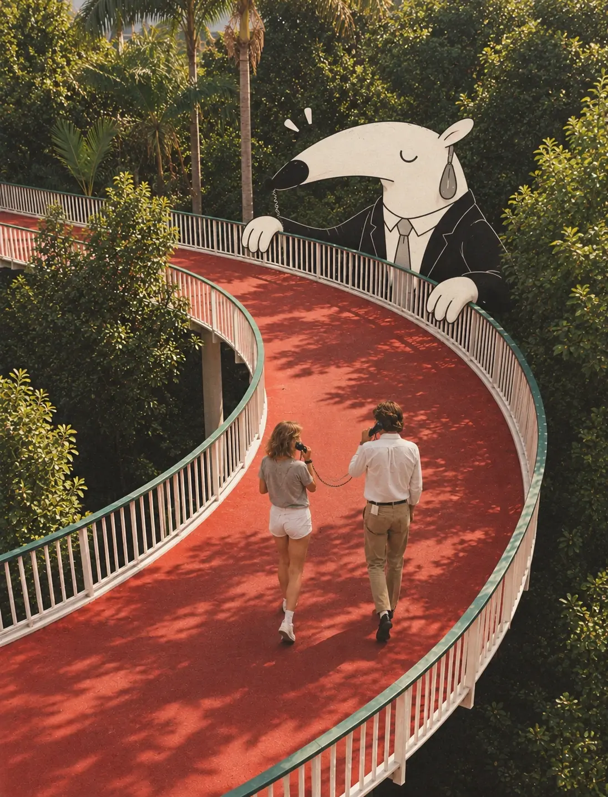

Venda online, na sua marca
Loja, agenda e compra no domínio do organizador. O comprador não precisa criar conta e recebe o ingresso por e-mail.
/01Ticketeria · infraestrutura de ingressos
/02Plataforma
Sessão única, temporada ou turnê, com ou sem assento marcado. As mesmas peças, configuradas para cada modelo de venda.
Loja, agenda e compra no domínio do organizador. O comprador não precisa criar conta e recebe o ingresso por e-mail.
O pagamento é dividido no momento da compra: o valor do ingresso vai para o organizador e só a taxa fica com a Ticketeria. A Ticketeria não retém o dinheiro.
Assento marcado, categorias de preço, cortesias, cupons e lista de espera, com lotes que avançam quando esgotam.
Cada ingresso tem um QR assinado. A leitura valida na hora e sincroniza quando a conexão volta.
Cobrança por Pix, cartão e terminal de pagamento no ponto de venda, com o mesmo controle de assentos e de público.
Receita, taxas, público e cortesias por sessão, em relatórios para conciliação e prestação de contas.
/03Casos de uso
Temporadas com várias sessões e assentos marcados, numa venda só.
Lotes, categorias e vários dias, com controle de capacidade.
Venda antecipada e presencial, com contagem de público em tempo real.
Vários locais e datas, com a base de compradores sob o seu controle.
Compradores
Compra sem cadastro, ingresso por e-mail e QR para a entrada.
Organizadores
Quem comprou, para qual sessão e por qual canal, com o mínimo que a lei exige.
/04Integração
Os ingressos se integram a sites, CRM, e-mail e sistemas de gestão.
API pública de leitura, widget de ingressos e webhooks assinados. Depois, plugins para plataformas de sites.
Pagamento dividido na transação, dados mínimos do comprador e reembolso com devolução da taxa.
Um widget de uma linha no seu site, a API de eventos e sessões, ou webhooks para notificar o seu sistema.
/05Próximas etapas
A descoberta e a compra de ingressos passam cada vez mais por assistentes e agentes de IA. O critério deles é objetivo: dados abertos, regras explícitas, ações previsíveis e pagamento seguro. A Ticketeria está sendo projetada para atender a esse critério desde a base.

/06Próximas etapas
Reúna vários eventos e organizadores numa vitrine própria, com curadoria e repasse a cada parte.
01
Monte a agenda com os eventos que quiser vender, no seu endereço e com a sua marca.
02
Eventos de vários locais num só lugar, com filtros por data, local e categoria.
03
Organizadores que vendem pela sua vitrine, cada um recebendo o seu valor, na mesma infraestrutura.
/07Situação
/08Perguntas frequentes
É a camada que sustenta a venda: loja e compra, divisão do pagamento, emissão do ingresso com QR, controle de acesso e relatórios, conectados por API. O site é uma das formas de usar.
Ainda não. Estamos desenvolvendo a plataforma e o acesso será por convite, para um grupo pequeno de organizadores. Solicite acesso pelo WhatsApp.
Uma taxa por ingresso vendido. O valor será divulgado junto com o lançamento.
Não. O pagamento é dividido no momento da compra: o valor do ingresso vai para a conta do organizador e só a taxa fica com a Ticketeria.
Não. Quem já tem site incorpora a agenda e o bloco de compra. Quem não tem recebe uma página de venda no próprio domínio.
/09 Acesso por convite
● LojaDomínio próprioPixQR sem conexãoAPI e webhooks
Acesso por convite durante a fase inicial. Descreva como você vende ingressos hoje.
Solicitar acesso ↗ A conversa é pelo WhatsApp